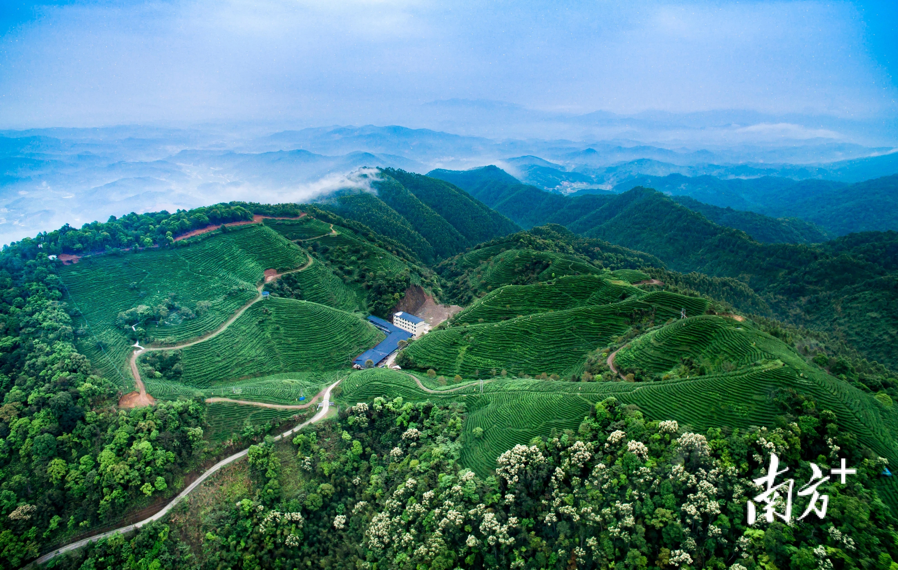
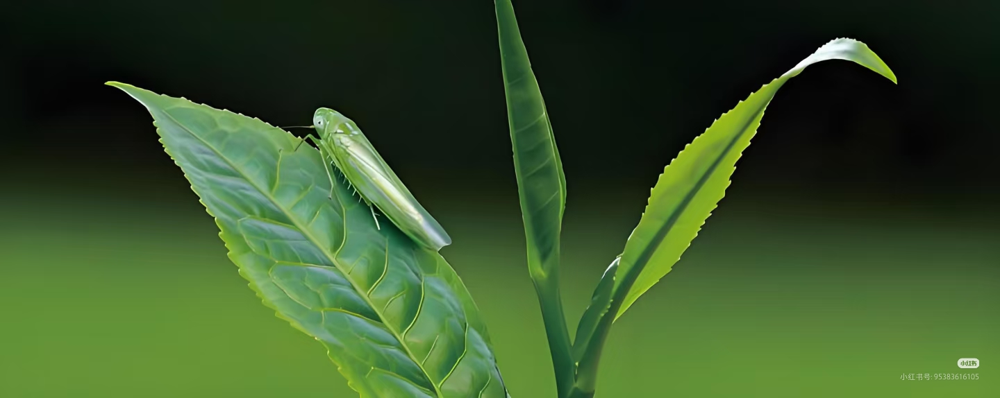
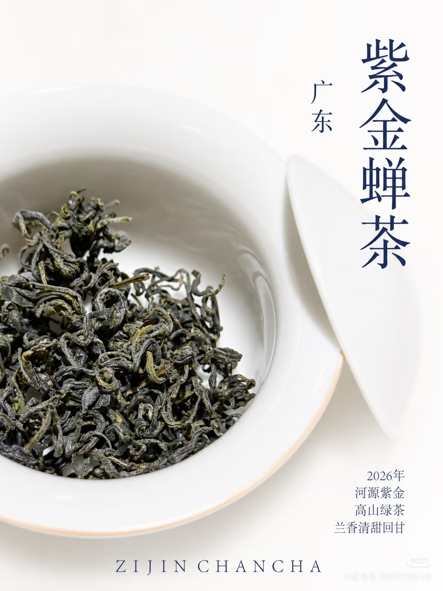
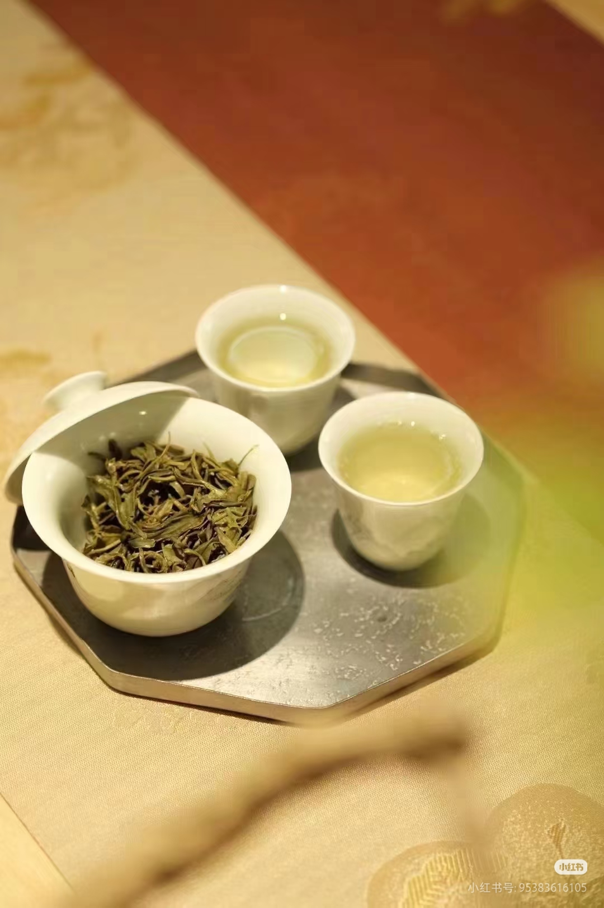

紫金蝉茶
被小绿叶蝉亲吻过的茶 · 天然蜜香
产地：广东 · 河源 · 紫金县
发酵程度：半发酵（青茶类）
推荐水温：85-90°C
风味特点：蜜香型 · 熟果香

产地故事
紫金蝉茶产自广东省河源市紫金县，这里地处粤东山区，山清水秀，云雾缭绕， 土壤富含矿物质，生态环境优越。紫金县种茶历史悠久，是广东重要的茶叶产区之一。

什么是"蝉茶"？
紫金蝉茶最独特的地方，在于它的"蝉"字。
每年夏季，一种叫小绿叶蝉（又称浮尘子）的昆虫会叮咬茶树的嫩芽和嫩叶， 吸食汁液。茶树被叮咬后会产生防御性应激反应，释放出特殊的芳香物质， 以吸引小绿叶蝉的天敌前来捕食。
而这种"受伤后"产生的芳香物质，正是天然蜜香和熟果香的来源。 这种香气无法通过人工工艺复制，是大自然与茶树共同谱写的奇妙乐章。

制作工艺
采摘（被小绿叶蝉叮咬过的一芽二叶）→ 萎凋 → 做青（摇青）→ 杀青 → 揉捻 → 干燥（重发酵工艺）
品鉴特点
- 外形：条索紧结，色泽乌褐油润，带金毫
- 汤色：琥珀色或橙黄透亮，清澈艳丽
- 香气：天然蜜香馥郁，带有熟果香和淡淡的花香
- 滋味：醇厚甘甜，蜜韵悠长，回甘持久

冲泡建议
- 建议使用盖碗或紫砂壶冲泡
- 水温控制在 85-90°C，充分激发蜜香
- 投茶量约为 5-7 克
- 前几泡快速出汤（10-20 秒），逐泡延长，可冲泡 6-8 次
荣誉与认可
- 荣获 "广东十大名茶" 称号
- 国家地理标志保护产品
- 多次在省级、国家级茶叶评比中获奖